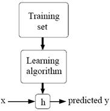

Artificial Intelligence | Machine Learning
|
|
|
This course provides a broad introduction to machine learning and statistical pattern recognition.
Topics include: supervised learning (generative/discriminative learning, parametric/non-parametric learning, neural networks, support vector machines); unsupervised learning (clustering,
dimensionality reduction, kernel methods); learning theory (bias/variance tradeoffs; VC theory; large margins); reinforcement learning and adaptive control.
The course will also discuss recent applications of machine learning, such as to robotic control, data mining, autonomous navigation, bioinformatics, speech recognition, and text and web data processing.
Students are expected to have the following background:
Prerequisites:
- Knowledge of basic computer science principles and skills, at a level sufficient to write a reasonably non-trivial computer program.
- Familiarity with the basic probability theory. (Stat 116 is sufficient but not necessary.)
- Familiarity with the basic linear algebra (any one of Math 51, Math 103, Math 113, or CS 205 would be much more than necessary.)
|
|

|
| View Lectures and Materials | |
|
|
|
|
|
| Andrew Ng |
| Ng's research is in the areas of machine learning and artificial intelligence. He leads the STAIR (STanford Artificial Intelligence Robot) project, whose goal is to develop a home assistant robot that can perform tasks such as tidy up a room, load/unload a dishwasher, fetch and deliver items, and prepare meals using a kitchen. Since its birth in 1956, the AI dream has been to build systems that exhibit "broad spectrum" intelligence. However, AI has since splintered into many different subfields, such as machine learning, vision, navigation, reasoning, planning, and natural language processing. To realize its vision of a home assistant robot, STAIR will unify into a single platform tools drawn from all of these AI subfields. This is in distinct contrast to the 30-year-old trend of working on fragmented AI sub-fields, so that STAIR is also a unique vehicle for driving forward research towards true, integrated AI.
Ng also works on machine learning algorithms for robotic control, in which rather than relying on months of human hand-engineering to design a controller, a robot instead learns automatically how best to control itself. Using this approach, Ng's group has developed by far the most advanced autonomous helicopter controller, that is capable of flying spectacular aerobatic maneuvers that even experienced human pilots often find extremely difficult to execute. As part of this work, Ng's group also developed algorithms that can take a single image,and turn the picture into a 3-D model that one can fly-through and see from different angles. |
|
|